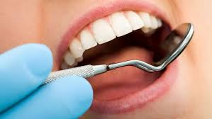
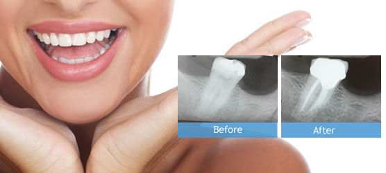

Fillings
Fillings are used to restore damaged, broken or decayed teeth.
There are 2 types of filling materials used: Amalgam fillings or tooth colored fillings.
Amalgam fillings are made from a mixture of metals.
These fillings are extremely durable and have a longer life span.
Tooth colored or composite fillings are made from a resin.
These are a natural looking alternative.
These fillings can be made virtually undetectable.

Root Canal
Root Canal Treatment is required when the root of a tooth is damaged or decayed and at risk of being infected.
The treatment consists of removing the infection and restructuring the core of the tooth, helping to prevent the need for an extraction in the future.
Crowns & Bridges
Crowns and Bridges: Dental crowns and bridges are used to treat broken,cracked or missing teeth.
Crowns are small porcelain caps placed on top of teeth helping rebuild their shape ensuring strength and security.
Bridges are used in a similar way but secure multiple broken or missing teeth instead.
Both treatments are reliable,strong and extremely long lasting and affordable.